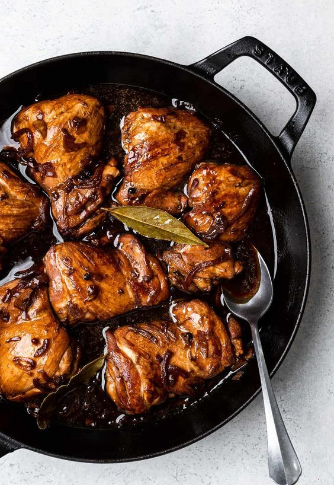
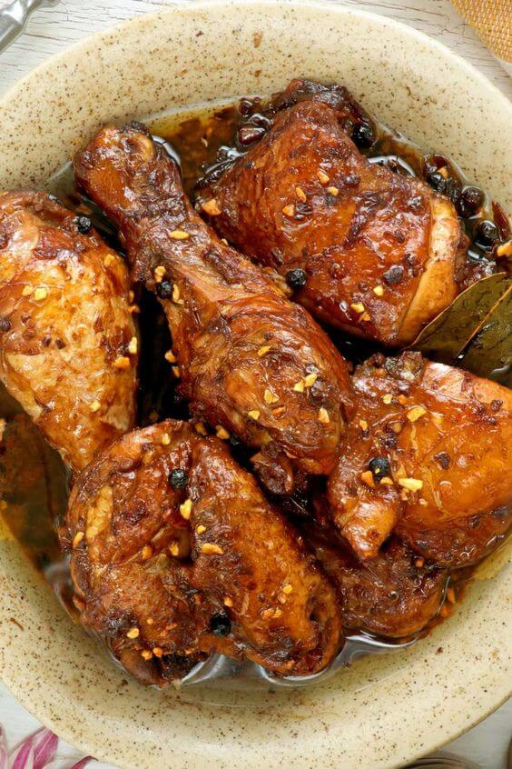
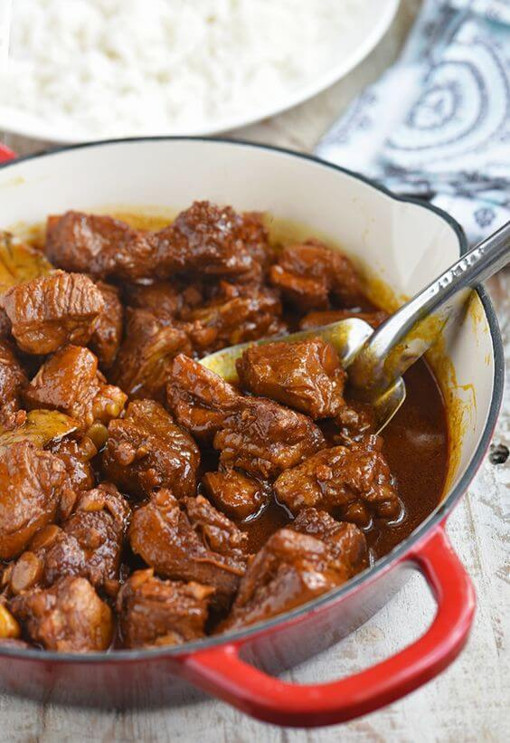

Sa paglalakbay sa mga kahangahangang kultura ng Pilipinas, hindi magiging kumpleto ang iyong karanasan kung
hindi mo matatagpuan at matitikman ang isa sa mga pinaka-tinatangkilik na lutuin sa bansa - ang Adobo. Ang
Adobo ay isang tradisyunal na pagkaing Pinoy na sumasagisag sa kasaysayan, panlasa, at kasiyahan ng mga
mamamayang Pilipino.
Ang salitang "Adobo" ay nagmula sa Kastila, na nangangahulugang "pinaasim" o "ginisa sa suka." Ito ay isang
ulam na nagpapakita ng malakas na panlasa at iba't ibang timpla, na nagsasama ng karne tulad ng baboy, manok,
baka, o iba pang mga sangkap tulad ng gulay. Ang mga pangunahing sangkap ng Adobo ay ang suka, toyo, bawang,
sibuyas, at iba pang mga pampalasa na nagbibigay ng kakaibang lasa at tatak na nagsasabing ito ay tunay na
Adobo.
Ang Adobo ay may kahalagahang kultural na nakalinya sa kasaysayan ng Pilipinas. Noong unang panahon, ang mga
sinaunang Pilipino ay gumagamit ng suka upang mapanatili ang karne ng baboy o manok sa ilalim ng mainit na
klima nang walang anumang preservatives. Sa pamamagitan ng paggisa sa suka, ang pagkaing ito ay naging
masustansya, masarap, at mas matagal na nagtatagal.
Bukod sa kahalagahan nito sa kasaysayan ng bansa, ang Adobo ay naglalarawan din sa pagkakaisa at pagmamahal ng
mga Pilipino sa kani-kanilang mga tahanan. Sa bawat pamilyang Pinoy, may kani-kanilang version ng Adobo na
pinagsasaluhan at pinapasarap nang henerasyon hanggang henerasyon. Ito ang isa sa mga paboritong putahe na
madalas na inihahanda sa mga okasyon at espesyal na pagkakataon tulad ng Pasko, Bagong Taon, at pagdiriwang ng
mga kaarawan. Ang bawat paghahanda ng Adobo ay nagbibigay-diin sa malasakit at pag-aalaga ng mga Pilipino sa
kanilang pamilya at mga kaibigan.
Ang Adobo ay hindi lamang isang putahe, kundi isang paraan din upang i-angat ang kultura ng Pilipinas sa buong
mundo. Ang simpleng kombinasyon ng asim, tamis, at alat ay nagbibigay ng pagkakaiba at kasarinlan sa Adobo, na
nagdudulot ng kakaibang kasiyahan sa mga nagsisimba rito sa Pilipinas o maging sa ibang mga bansa. Sa
katunayan, maraming mga internasyonal na turista at manlalakbay ang nagpapakalunod sa kasarapang hatid ng
lutuing ito.
Ang Adobo ay hindi lang pangkaraniwang ulam sa Pilipinas; ito ay tumatak sa mga puso't isipan ng bawat
mamamayan. Sa bawat piraso ng karne na nalamnan ng lasa ng suka, toyo, at iba pang pampalasa, ang Adobo ay
sumasalamin sa mga katangian ng mga Pilipino bilang mga mapagmahal, mapagpasalamat, at matatag na mga tao.
Sa huli, ang Adobo ay hindi lamang isang pagkaing kinakain, ito ay isang simbolo ng samahan, pagkakaisa, at
pagmamahal ng mga Pilipino sa kanilang kultura. Ito ay nagpapaalala sa atin na kahit sa gitna ng pagbabago at
modernisasyon, ang mga simpleng bagay tulad ng Adobo ay naglalaman ng mga malalim na kahulugan at
makapagbibigay ng kasiyahan sa ating buhay. Kaya, sa pagkakain ng Adobo, tangkilikin natin ang lasa ng
kasaysayan at kultura ng Pilipinas na binabalot ng bawat kutsarang kinakain natin.
Adobo: Isang Klasikong Pagkaing Pinoy


